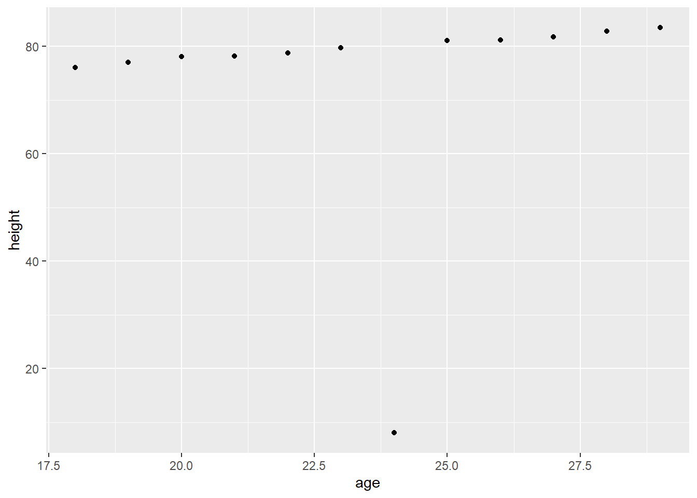
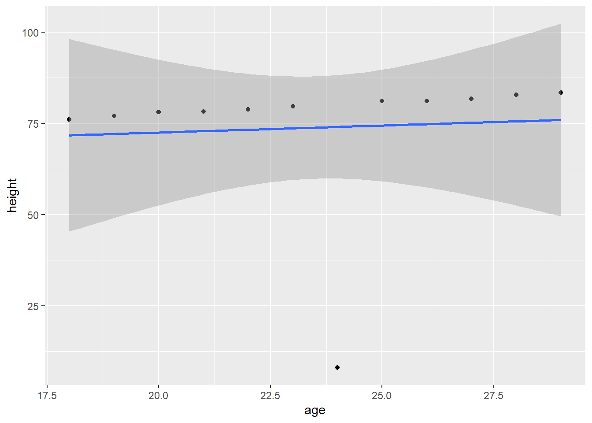
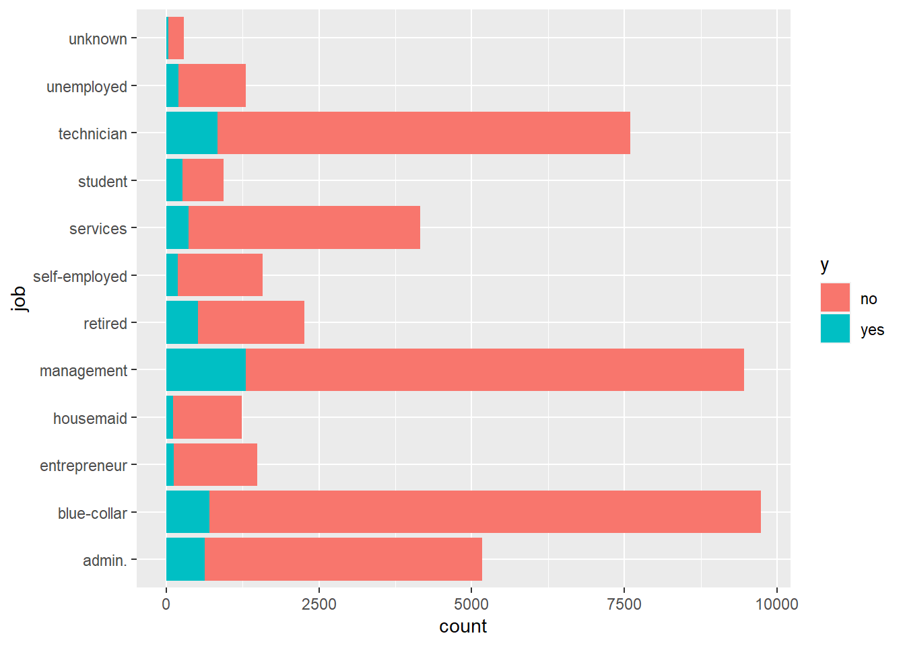

Regresja liniowa to tworzenie modeli przedstawiających wielkość, której wartość chcemy przewidzieć (zmienna zależna) jako kombinację liniową predyktorów (zmiennych zależnych).
gdzie wektor wartości zmiennych zależnych jest przewidywany na podstawie macierzy danych i wektora współczynników \(\beta\).
Współczynnik \(\beta_0\) w nomentkalturze anglojęzycznej jest nazywany intercept ponieważ jest to punkt przecięcia się z osią \(y\) gdy wszystkie predyktory są równe 0.
Aby wyznaczyć parametry modelu liniowego potrzebujemy wektora danych uczących, tj. znanych nam wartości zmiennej zależnej \(\mathbf{y}\) oraz odpowiadająxcej mu macierzy predyktorów \(\mathbf{X}\). Macierz predyktorów nosi nazwę design matrix.
Model regresyjny ma mocne umocowanie statystyczne, jednak w ramach zajęć będziemy traktować go machinistycznie jak jedną z metod uczenia maszynowego. Do tworzenia takich modeli służy polecenie lm.
Przykład prostej regresji liniowej zależności wzrostu od wieku:
library(readxl)ageandheight <-read_excel("ageandheight.xls", sheet ="Hoja2") #Upload the dataggplot(ageandheight, aes(x = age, y = height )) +geom_point()

Obliczenie modelu regresji liniowej dla danych:
lmHeight =lm(height~age, data = ageandheight) #Create the linear regressionsummary(lmHeight) #Review the results
Call:
lm(formula = height ~ age, data = ageandheight)
Residuals:
Min 1Q Median 3Q Max
-66.059 5.193 5.810 6.617 7.533
Coefficients:
Estimate Std. Error t value Pr(>|t|)
(Intercept) 64.8445 43.3815 1.495 0.166
age 0.3835 1.8264 0.210 0.838
Residual standard error: 21.84 on 10 degrees of freedom
Multiple R-squared: 0.00439, Adjusted R-squared: -0.09517
F-statistic: 0.0441 on 1 and 10 DF, p-value: 0.8379
Dla dokładnej wizualizacji wyników modelu można użyć pakietu ``ggplot```:
ggplot(ageandheight, aes(x = age, y = height)) +geom_point() +stat_smooth(method ="lm")
`geom_smooth()` using formula = 'y ~ x'

W przypadku chęci użycia regresji liniowe zależności wzrostu od wielu zmiennych możemy użyć następującej składni:
lmHeight2 =lm(height~age + no_siblings, data = ageandheight) #Create a linear regression with two variablesprint(summary(lmHeight2)) #Review the results
Call:
lm(formula = height ~ age + no_siblings, data = ageandheight)
Residuals:
Min 1Q Median 3Q Max
-47.808 -4.521 1.002 10.025 21.186
Coefficients:
Estimate Std. Error t value Pr(>|t|)
(Intercept) 56.597 39.166 1.445 0.1823
age 1.303 1.712 0.761 0.4660
no_siblings -6.415 3.464 -1.852 0.0971 .
---
Signif. codes: 0 '***' 0.001 '**' 0.01 '*' 0.05 '.' 0.1 ' ' 1
Residual standard error: 19.59 on 9 degrees of freedom
Multiple R-squared: 0.2791, Adjusted R-squared: 0.1189
F-statistic: 1.742 on 2 and 9 DF, p-value: 0.2293
Użycie ggplot do tworzenia regresji liniowej wielu zmiennych:
ggplot(ageandheight, aes(x = age + no_siblings, y = height)) +geom_point() +stat_smooth(method ="lm")
Zazwyczaj rozwiązując problem nie mamy dostępu do dodatkowych danych testowych uzupełniających nasze dane uczące. Dlatego też, popularną praktyką jest podzielenie posiadanego zbioru danych w sposób losowy na dwa zbiory: uczący i testowy.
Zadanie 1
Na podstawie danych zawartych w pliku SCORES.csv wykonaj i oceń regresję liniową, gdzie Twoją daną niezależną (predyktorem) będą godziny poświęcone na przygotowanie, a wynikową uzyskane punkty. Wykonanie zadania powinno składać się z następujących kroków:
Odczytaj dane z pliku SCORES.csv. Przeprowadź wstępną analizę danych.
Wykonaj wstępny wykres uzyskanych danych (typu “scatter”)
Dokonaj podziału danych na zbiory danych niezależnych (wejściowe, X) oraz zaleznych (wyjściowe, y) dla swojego modelu, a następnie podziel zbiór na dane testowe i treningowe (30%)
Utwróz model regresji liniowej za pomocą lm
Przenalizuj opis dopasowania modelu zwracany przez funkcję lm
Wykorzystając stworozny model dokonaj predykcji dla części testowej X. Porównaj wynik (y_pred) z posiadanymi danymi (y_test).
Wykonaj wykres konfrontujący dane testowe (X_test, y_test; typu “scatter”) oraz predykcje (X_test, y_pred; linia prosta)
Dokonaj walidacji uzyskanych predykcji wykorzystując metryki: średni błąd bezwzględny (Mean Absolute Error), błąd średniokwadratowy (Mean Squared Error) oraz pierwiastek błędu średniokwadratowego (Root Mean Squared Error).
Następnie utworzony skrypt wykorzystaj na danych zawartych w SBP.csv, gdzie predyktorem będzie wiek, a wynikiem ciśnienie (SBP). Czy uzyskane wyniki z modelu są równie zadowalające?
Zadanie 2
Na podstawie danych zawartych w pliku PETROL.csv wykonaj i oceń regresję liniową. Jako daną zależną wykorzystaj zużycie paliwa, a pozostałe - jako predyktory. Wykonanie zadania powinno składać się z kroków podobnych do tych z zadania poprzedniego.
Czy uzyskane wyniki predykcji modelu są dobre? Co mogło mieć pozytywny/negatywny wpływ na taki wynik?
Regresja logistyczna
Naturalnym rozwojem modeli linowych, są uogólnione modele liniowe (generalized linear models).
Ich przewodnią ideą jest to, że zamiast reprezentować zmienną zależną jako kombinację liniową niezależnych, staramy się stworzyć model liniowy pewnej funkcji zmiennej zależnej.
Takie przekształcenie stosujemy wtedy, gdy zbiór wartości zmiennej zależnej nie jest całym zbiorem liczb rzeczywistych tylko jest w jakiś sposób ograniczony. Na przykład do przedziału \([0,1]\), do wartości dodatnich lub wartości całkowitych. W tens posób można wybrać funkcję \(f\), której dziedziną jest zbiór wartości \(y\) zaś obrazem jest zbiór liczb rzeczywistych.
Jedną z takich funkcji jest tzw. funkcja logistyczna, która odpowiada zbiorowi \([0,1]\) przez co często jest wykorzystywana do analizy prawdopodobieństwa przynależności do danej klasy, lub też inaczej jako klasyfikator.
W takiej sytuacji zmienne zależne powinny przyjmować wyłącznie wartości \(0\) i \(1\) co odpowiada temu czy dany punkt należy do interesującej klasy. Model logistyczny poznwala na określenie estymaty prawdopodobieństwa, czy punkt należy czy nie do danej klasy.
Do tworzenia modeli logistycznyc służy biblioteka tidymodels i metoda logistic_reg.
Przykład użycia regresji logistycznej w określeniu czy klient kupi subskrypcję produktu w kampani maketingowej
Wczytanie i wstępna analiza danych:
library(readr)
Warning: package 'readr' was built under R version 4.3.2
Attaching package: 'readr'
The following object is masked from 'package:yardstick':
spec
The following object is masked from 'package:scales':
col_factor
library(tidymodels)# Read the dataset and convert the target variable to a factorbank_df <-read_csv2("bank-full.csv")
ℹ Using "','" as decimal and "'.'" as grouping mark. Use `read_delim()` for more control.
Rows: 45211 Columns: 17
── Column specification ────────────────────────────────────────────────────────
Delimiter: ";"
chr (10): job, marital, education, default, housing, loan, contact, month, p...
dbl (7): age, balance, day, duration, campaign, pdays, previous
ℹ Use `spec()` to retrieve the full column specification for this data.
ℹ Specify the column types or set `show_col_types = FALSE` to quiet this message.
bank_df$y =as.factor(bank_df$y)# Plot job occupation against the target variableggplot(bank_df, aes(job, fill = y)) +geom_bar() +coord_flip()

Za pomocą funkcji initial_split możemy podzielić dane na zbiory testowe i treningowe
# Split data into train and testset.seed(421)split <-initial_split(bank_df, prop =0.8, strata = y)train <- split %>%training()test <- split %>%testing()
Uczenie modelu regresji logistycznej odbywa się w następujący sposób:
# Train a logistic regression modelmodel <-logistic_reg(mixture =double(1), penalty =double(1)) %>%set_engine("glmnet") %>%set_mode("classification") %>%fit(y ~ ., data = train)# Model summarytidy(model)
Warning: package 'glmnet' was built under R version 4.3.2
Loading required package: Matrix
Attaching package: 'Matrix'
The following objects are masked from 'package:tidyr':
expand, pack, unpack
Na podstawie modelu możemy przeprowadzić predykcję dla wybranych klientów:
# Class Predictionspred_class <-predict(model,new_data = test,type ="class")# Class Probabilitiespred_proba <-predict(model,new_data = test,type ="prob")results <- test %>%select(y) %>%bind_cols(pred_class, pred_proba)accuracy(results, truth = y, estimate = .pred_class)
Na podstawie danych zawartych w pliku HEART.csv wykonaj i oceń regresję logistyczną, gdzie Twoją daną zależną jest kolumna “num”. Wykonanie zadania powinno składać się z następujących kroków:
Zaimportowanie niezbędnych bibliotek w szczególności tych tworzących modele liniowe, a także biblioteki do operacji na danych oraz tworzenia wykresów.
Odczytanie danych z pliku HEART.csv. Przeprowadź wstępną analizę danych.
Przetworzenie danych, tj: oznaczenie braku danych (“?”) na NaN, usunięcię kolumn zawierających zbyt dużo brakujących danych (3 kolumny), usunięcie wierszy z brakującymi wartościami.
Zakoduj niezależne zmienne kategorialne np: jako wartości “dummy”. Zmienne kategorialne to takie, które reprezentuja przynależność do kategorii. W przypadku naszych odfiltrowanych danych będą to kolumny: cp, restecg, fbs, sex, exang. Jako, że trzy ostatnie już zapisane są w formie 0 i 1 tylko cp i restecg wymagają tej operacji.
Dokonaj podziału danych na zbiory danych niezależnych (wejściowe, X) oraz zależnych (wyjściowe, y) dla swojego modelu, a następnie podziel zbiór na dane testowe i treningowe (20%).
Utwróz model regresji logistycznej.
Oceń wynik za pomocą wybranych metryk.
Możesz również spróbować ustandaryzować dane (np: poprzez skalowanie) po podziale na zbiory treningowy i testowy.